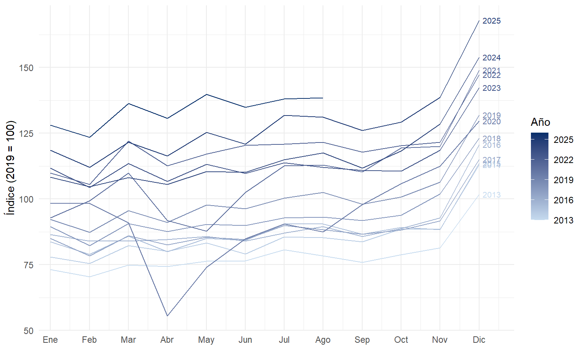
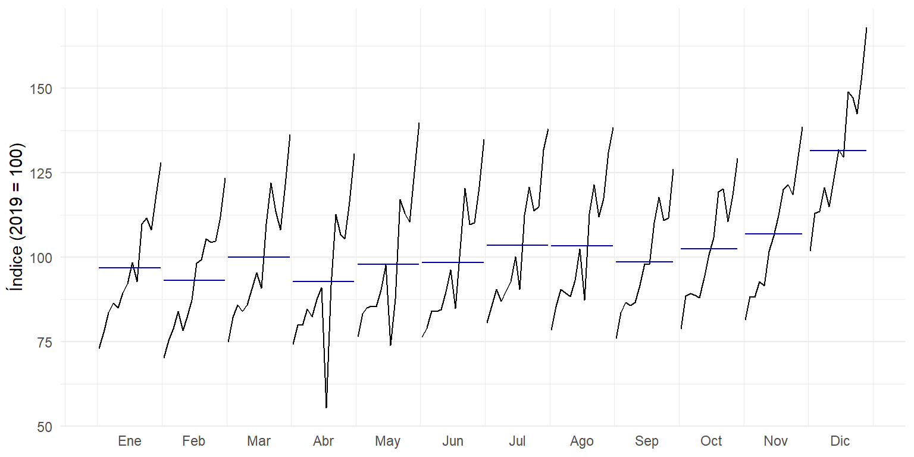
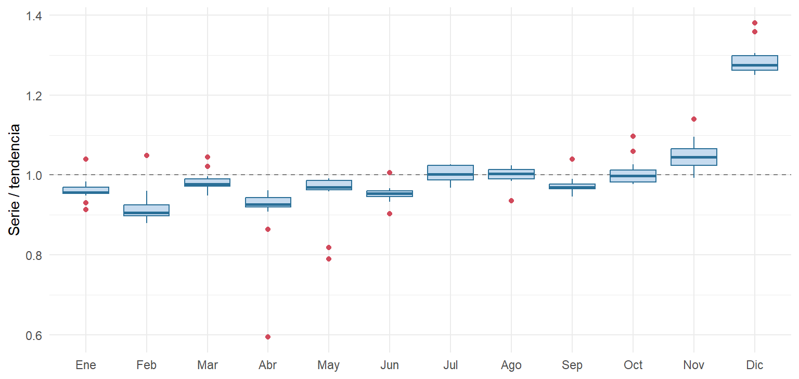
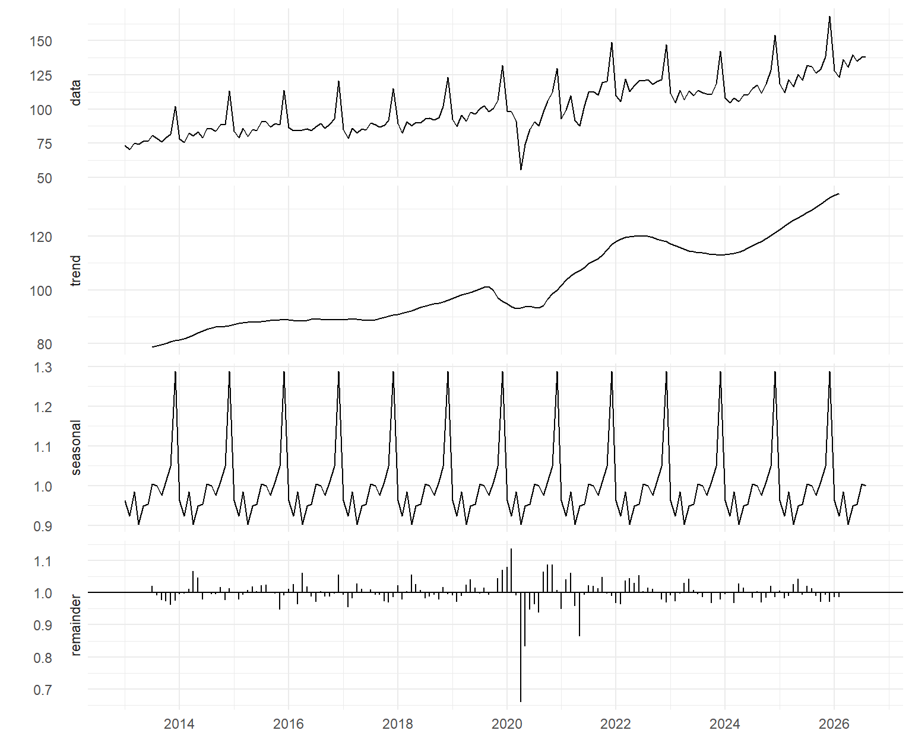
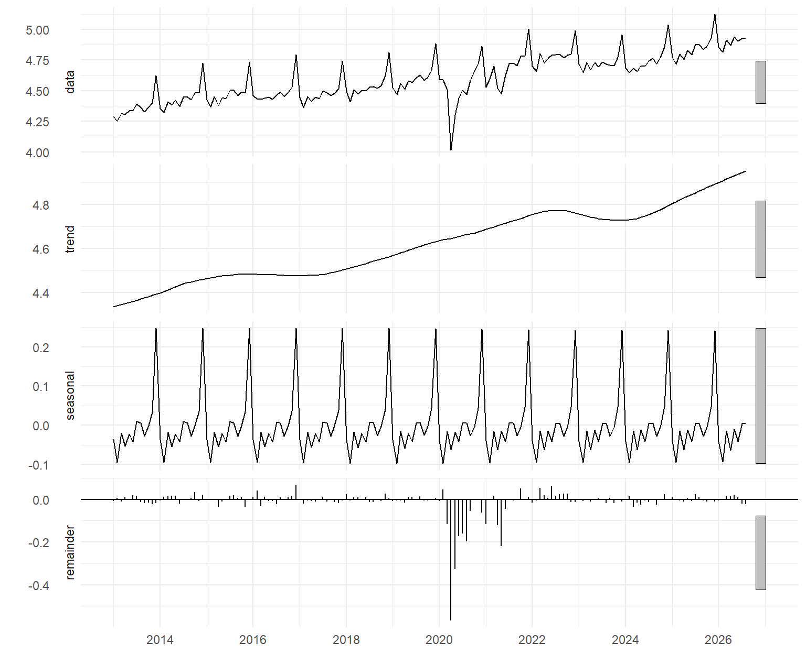

Capítulo 5 Aproximación a la estacionalidad
5.1 Idea
La estacionalidad es un patrón que se repite con un periodo fijo y conocido. En esta serie el periodo es de 12 meses, como mostraron el promedio 2×12 (Capítulo 3) y el rezago 12 (Capítulo 4). En este capítulo se mide qué meses concentran las ventas, cuánto se apartan de la tendencia y si el patrón es estable en el tiempo.
5.2 Gráfico estacional
por_anio <- data.frame(
anio = floor(as.numeric(time(y))),
mes = as.numeric(cycle(y)),
valor = as.numeric(y)
)
ggplot(por_anio, aes(mes, valor, group = anio, colour = anio)) +
geom_line() +
geom_text(data = subset(por_anio, mes == 12), aes(label = anio),
hjust = -0.2, size = 2.8, show.legend = FALSE) +
scale_colour_gradient(low = "#c6dbef", high = "#08306b", name = "Año") +
scale_x_continuous(breaks = 1:12, labels = meses, expand = expansion(add = c(0.3, 0.9))) +
labs(x = NULL, y = "Índice (2019 = 100)")
Figura 5.1: Gráfico estacional: una línea por año, del más antiguo (claro) al más reciente (oscuro).
En la Figura 5.1 todas las líneas tienen la misma forma: un mínimo en febrero, otro en abril, un nivel más alto en julio y agosto, una leve caída en septiembre, el ascenso de octubre y noviembre y un salto en diciembre. Las líneas se apilan hacia arriba año tras año (tendencia), salvo la de 2020, que se hunde en abril y mayo. La línea de 2023 queda por debajo de la de 2022 en 11 de los 12 meses, lo que coincide con la desaceleración del Capítulo 3.
5.3 Subseries mensuales
ggsubseriesplot(y) +
scale_x_continuous(breaks = seq(1.5, 12.5, 1), labels = meses) +
labs(title = NULL, x = NULL, y = "Índice (2019 = 100)")
Figura 5.2: Subseries por mes: evolución de cada mes a lo largo de los años. La línea horizontal es el promedio del mes.
El gráfico de subseries (Figura 5.2) agrupa los datos de cada mes. La línea horizontal de diciembre está muy por encima de las demás, y todos los meses comparten la misma tendencia creciente: la estacionalidad se suma a la tendencia, no la reemplaza.
5.4 Distribución por mes
si <- data.frame(mes = factor(meses[cycle(ratio)], levels = meses), valor = as.numeric(ratio))
ggplot(na.omit(si), aes(mes, valor)) +
geom_hline(yintercept = 1, linetype = "dashed", colour = "grey50") +
geom_boxplot(fill = "#c6dbef", colour = azul, outlier.colour = naranja) +
labs(x = NULL, y = "Serie / tendencia")
Figura 5.3: Distribución del cociente serie/tendencia (2×12) por mes, 2013–2026.
Al usar el cociente serie/tendencia de la Sección 3.4 se elimina la tendencia, y las cajas de la Figura 5.3 muestran solo el efecto de cada mes. Las cajas son estrechas y diciembre no se superpone con ningún otro mes, lo que indica que el patrón estacional es estable. Los valores atípicos (en rojo) corresponden casi todos a 2020 y 2021, los años del choque y del rebote.
5.5 Descomposición clásica multiplicativa
La descomposición clásica formaliza los pasos anteriores: estima la tendencia con el promedio 2×12, promedia el cociente serie/tendencia de cada mes para obtener los índices estacionales y deja el resto como componente irregular:
\[\begin{equation} y_t = T_t \times S_t \times I_t. \tag{5.1} \end{equation}\]

Figura 5.4: Descomposición clásica multiplicativa del índice de ventas reales.
| Mes | Índice estacional | Efecto frente a la tendencia (%) |
|---|---|---|
| Enero | 0,963 | -3,7 |
| Febrero | 0,923 | -7,7 |
| Marzo | 0,985 | -1,5 |
| Abril | 0,902 | -9,8 |
| Mayo | 0,948 | -5,2 |
| Junio | 0,954 | -4,6 |
| Julio | 1,004 | 0,4 |
| Agosto | 0,999 | -0,1 |
| Septiembre | 0,976 | -2,4 |
| Octubre | 1,010 | 1,0 |
| Noviembre | 1,049 | 4,9 |
| Diciembre | 1,288 | 28,8 |
Según la Tabla 5.1, diciembre vende 29 % más que la tendencia, por las primas de fin de año y la temporada navideña. Le sigue noviembre (4,9 %), que recoge el inicio de la temporada y las jornadas de descuentos. En el otro extremo están abril (-9,8 %) y febrero (-7,7 %).
Esta descomposición tiene una limitación: supone índices estacionales fijos y promedia todos los años, incluido 2020. El índice de abril está arrastrado por el cierre de abril de 2020. Si se promedian solo los cocientes de 2013 a 2019, abril queda en -6,2 % y febrero pasa a ser el mes más bajo (-9,2 %), algo coherente con un mes más corto y con los gastos de inicio de año. Abril sigue por debajo de la tendencia porque allí cae con frecuencia la Semana Santa, que reduce los días hábiles. Por eso se complementa con una descomposición más robusta.
5.6 Descomposición STL
La descomposición STL (Seasonal and Trend decomposition using Loess) estima tendencia y estacionalidad con regresiones locales. En su versión robusta reduce el peso de las observaciones atípicas, como las de 2020. Se aplica sobre el logaritmo para que el esquema multiplicativo quede aditivo:

Figura 5.5: Descomposición STL robusta del logaritmo del índice (ventana estacional de 13 meses).
Con una ventana estacional de 13 meses, STL permite que el patrón cambie poco a poco. Aun así, el componente estacional de la Figura 5.5 es casi idéntico a lo largo de los años: el factor de diciembre pasa de 1,281 en 2013 a 1,273 en 2025. El choque de 2020 queda en el componente irregular (remainder) y no distorsiona la estacionalidad.
Para resumir la importancia de cada componente se usan las medidas de fuerza de Hyndman & Athanasopoulos (2021, Sección 4.3):
\[F_S = \max\left(0,\; 1 - \frac{\operatorname{Var}(R_t)}{\operatorname{Var}(S_t + R_t)}\right), \qquad F_T = \max\left(0,\; 1 - \frac{\operatorname{Var}(R_t)}{\operatorname{Var}(T_t + R_t)}\right).\]
Se obtiene fuerza estacional \(F_S =\) 0,64 y fuerza de tendencia \(F_T =\) 0,86. Ambas son altas, aunque el irregular de 2020 las reduce. El pronóstico deberá modelar los dos componentes.